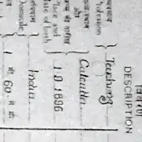

Vanipedia
The essence of Vedic knowledge
Start here Start learning Find a topic or source Read and listen in my language
Śrīla Prabhupāda
His Divine Grace A. C. Bhaktivedanta Swami Prabhupāda
Founder-Ācārya and Preeminent Śikṣā-Guru of the International Society for Krishna Consciousness
Srila Prabhupada: The Founder-Acarya of ISKCON. A GBC Foundational DocumentTranslated in 17 Languages
Building Śrīla Prabhupāda's Vani Temple
Welcome to Vanipedia, a dynamic, living encyclopedia of Śrīla Prabhupāda's words (vani). We are building an unparalleled digital repository of his text, audio, video, and images, comprehensively compiling his teachings from every angle of vision.
-
Catalogue number No. 1
Introductory Articles
- Absorbed in Thought of God Practical Methods to Absorb the Mind
- Predicament of Modern Man Solution for Modern Age
-
Catalogue number No. 2
AI-assisted articles
AI-assisted summaries of Vaniquotes categories. Quotations verbatim; framing generated. See Methodology.
-
Catalogue number No. 3
Browse topics
-
Catalogue number No. 4
Nectar Drops from Śrīla Prabhupāda
Nectar Drops are short, focused audio excerpts of less than 90 seconds, drawn directly from Śrīla Prabhupāda's recorded lectures, conversations, and morning walks.
-
Catalogue number No. 5

Images and documents
-
Catalogue number No. 6
Śrīla Prabhupāda in the Media
- Chula Vista Star News (1976) A Message of Peace and Pure Spiritual Realization
-
Catalogue number No. 7
Disciples Remember Śrīla Prabhupāda
- Yaduvendu dāsa Personal eyewitness recollections, intimate exchanges, and devotional memories with His Divine Grace Śrīla Prabhupāda recounted by Yaduvendu das.
- Naikātma dāsa Naikatma das Remembers Srila Prabhupada